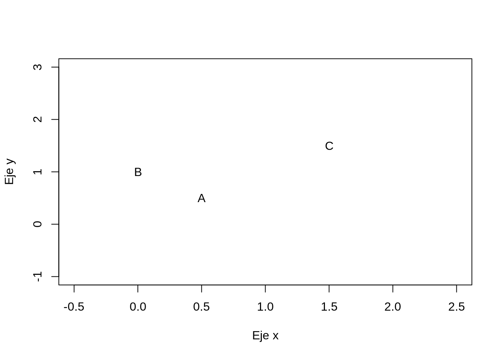

El clustering jerarquico no conduce a una sola partición con un numero determinado de agrupaciones, si no que produce una serie de particiones obtenidas en diferentes pasos.
Este tipo de clustering necesita una matriz de disimilitud
Sea \(X\) una matriz de dimensión \(n \times p\). Los valores que toma la matriz pueden ser cuantitativos o cualitativos.
Primero veamos el caso cuantitativo.
En R podemos encontrar implementadas varias distancias. Por ejemplo
\[d(\mathbb{x_i},\mathbb{x_{i'}}) = \sqrt{\sum_{j=1}^p(x_{ij}-x_{i'j})^2}\] caso particular de la distancia Minkowski de orden \(q\)
\[d_M^q(\mathbb{x_i},\mathbb{x_{i'}}) = \left(\sum_{j=1}^p\vert x_{ij}-x_{i'j}\vert^q\right)^{1/q}\] Podemos encontrar la distancia euclideana en R como dist en el paquete stats y como daisy paquete cluster.
library(stats)
X <- matrix (c(0.5,0.0,1.5,0.5,1.0,1.5), ncol=2)
plot(X,type="n",xlim = c(-0.5,2.5), ylim = c(-1,3) , xlab = "Eje x" , ylab = "Eje y")
text(X[,1] , X[,2] , c("A","B","C"))
dist(X,diag =FALSE)## 1 2
## 2 0.7071068
## 3 1.4142136 1.5811388library(cluster)
daisy(X, metric="euclidean")## Dissimilarities :
## 1 2
## 2 0.7071068
## 3 1.4142136 1.5811388
##
## Metric : euclidean
## Number of objects : 3Mediante la libreria dist podemos calcular la distancia euclideana, minkowski y manhattan (minkowski con \(q=1\)).
Mediante la libreria daisy podemos calcular la distancia euclideana y manhattan.
dist(X,method="minkowski",p=3)## 1 2
## 2 0.6299605
## 3 1.2599210 1.5182945Observación: Mediante daisy podemos estandarizar los datos (Si quisieramos hacer lo mismo con dist, tendriamos que estandarizar antes)
\[d_M(\mathbb{x_i},\mathbb{x_{i'}})=\sqrt{(x_i-x_{i'})^T\Sigma^{-1}(x_i-x_{i'})}\]
La distancia de Mahalanobis no está incluida en ninguno de estos paquetes. El paquete stats contiene la función mahalanobis la cual computa el cuadrado de la distancia de mahalanobis entre el vector \(x_i\) y un vector \(x_{i'}\). Es decir, no obtenemos una matriz de disimilitud.
mahalanobis(X,center=c(0.5,0.5),cov=var(X))## [1] 0 4 4Otro paquete que contiene la función mahalanobis es mahalanobis.dist del paquete StatMatch. Esta función si nos retorna una matriz de similitud
library(StatMatch)## 필요한 패키지를 로딩중입니다: proxy##
## 다음의 패키지를 부착합니다: 'proxy'## The following objects are masked from 'package:stats':
##
## as.dist, dist## The following object is masked from 'package:base':
##
## as.matrix## 필요한 패키지를 로딩중입니다: survey## 필요한 패키지를 로딩중입니다: grid## 필요한 패키지를 로딩중입니다: Matrix## 필요한 패키지를 로딩중입니다: survival##
## 다음의 패키지를 부착합니다: 'survey'## The following object is masked from 'package:graphics':
##
## dotchart## 필요한 패키지를 로딩중입니다: lpSolve## 필요한 패키지를 로딩중입니다: ggplot2mahalanobis.dist(X,vc=var(X))## [,1] [,2] [,3]
## [1,] 0 2 2
## [2,] 2 0 2
## [3,] 2 2 0El paquete distances contiene la distancia euclideana y la de mahalanobis.
library(distances)
distances(X, normalize = "mahalanobize")## 1 2 3
## 1 0 2 2
## 2 2 0 2
## 3 2 2 0Este paquete contiene una función llamada distance, la cual contiene una gran variedad de distancias y medidas de similaridad.
Sorensen \[d = ∑ | P_i - Q_i | / ∑ (P_i + Q_i)\]
Gower \[d = 1/d * ∑ | P_i - Q_i |\]
Soergel \[d = ∑ | P_i - Q_i | / ∑ max(P_i , Q_i)\]
Kulczynski \[d = ∑ | P_i - Q_i | / ∑ min(P_i , Q_i)\]
Canberra \[d = ∑ | P_i - Q_i | / (P_i + Q_i)\]
Lorentzian \[d = ∑ ln(1 + | P_i - Q_i |)\]
Intersection \[s = ∑ min(P_i , Q_i)\]
Non-Intersection \[d = 1 - ∑ min(P_i , Q_i)\]
Wave Hedges \[d = ∑ | P_i - Q_i | / max(P_i , Q_i)\]
Czekanowski \[d = ∑ | P_i - Q_i | / ∑ | P_i + Q_i |\]
Motyka \[d = ∑ min(P_i , Q_i) / (P_i + Q_i)\]
Kulczynski s \[d = 1 / ∑ | P_i - Q_i | / ∑ min(P_i , Q_i)\]
Tanimoto \[d = ∑ (max(P_i , Q_i) - min(P_i , Q_i)) / ∑ max(P_i , Q_i) \] equivalente a Soergel
Ruzicka \[s = ∑ min(P_i , Q_i) / ∑ max(P_i , Q_i)\] equivalente a 1 - Tanimoto = 1 - Soergel
Inner Product \[s = ∑ P_i * Q_i\]
Harmonic mean \[s = 2 * ∑ (P_i * Q_i) / (P_i + Q_i)\]
Cosine \[s = ∑ (P_i * Q_i) / \sqrt{∑ P_i^2} * \sqrt{∑ Q_i^2}\]
Kumar-Hassebrook (PCE) \[s = ∑ (P_i * Q_i) / (∑ P_i^2 + ∑ Q_i^2 - ∑ (P_i * Q_i))\]
Jaccard \[d = 1 - ∑ (P_i * Q_i) / (∑ P_i^2 + ∑ Q_i^2 - ∑ (P_i * Q_i))\] equivalente a 1 - Kumar-Hassebrook
Dice \[d = ∑ (P_i - Q_i)^2 / (∑ P_i^2 + ∑ Q_i^2)\]
Fidelity \[s = ∑ \sqrt{P_i * Q_i}\]
Bhattacharyya \[d = - ln ∑ sqrt(P_i * Q_i)\]
Hellinger \[d = 2 * \sqrt( 1 - ∑ \sqrt{P_i * Q_i})\]
Matusita \[d = sqrt( 2 - 2 * ∑ \sqrt{P_i * Q_i})\]
Squared-chord \[d = ∑ ( \sqrt{P_i} - \sqrt{Q_i} )^2\]
Squared Euclidean \[d = ∑ ( P_i - Q_i )^2\]
Pearson X^2 \[d = ∑ ( (P_i - Q_i )^2 / Q_i )\]
Neyman X^2 \[d = ∑ ( (P_i - Q_i )^2 / P_i )\]
Squared X^2 \[d = ∑ ( (P_i - Q_i )^2 / (P_i + Q_i) )\]
Probabilistic Symmetric X^2 \[d = 2 * ∑ ( (P_i - Q_i )^2 / (P_i + Q_i) )\]
Divergence : X^2 \[d = 2 * ∑ ( (P_i - Q_i )^2 / (P_i + Q_i)^2 )\]
Clark \[d = sqrt ( ∑ (| P_i - Q_i | / (P_i + Q_i))^2 )\]
Additive Symmetric X^2 \[d = ∑ ( ((P_i - Q_i)^2 * (P_i + Q_i)) / (P_i * Q_i) )\]
Kullback-Leibler \[d = ∑ P_i * log(P_i / Q_i)\]
Jeffreys \[d = ∑ (P_i - Q_i) * log(P_i / Q_i)\]
K divergence \[d = ∑ P_i * log(2 * P_i / P_i + Q_i)\]
Topsoe \[d = ∑ ( P_i * log(2 * P_i / P_i + Q_i) ) + ( Q_i * log(2 * Q_i / P_i + Q_i) )\]
Jensen-Shannon \[d = 0.5 * ( ∑ P_i * log(2 * P_i / P_i + Q_i) + ∑ Q_i * log(2 * Q_i / P_i + Q_i))\]
Jensen difference \[d = ∑ ( (P_i * log(P_i) + Q_i * log(Q_i) / 2) - (P_i + Q_i / 2) * log(P_i + Q_i / 2) )\]
Taneja \[d = ∑ ( P_i + Q_i / 2) * log( P_i + Q_i / ( 2 * sqrt( P_i * Q_i)) )\]
Kumar-Johnson \[d = ∑ (P_i^2 - Q_i^2)^2 / 2 * (P_i * Q_i)^1.5\]
Avg(L_1, L_n) \[d = ∑ | P_i - Q_i| + max{ | P_i - Q_i |} / 2\]
Podemos encontrar todas las distancias con el siguiente comando
library(philentropy)
getDistMethods()## [1] "euclidean" "manhattan" "minkowski"
## [4] "chebyshev" "sorensen" "gower"
## [7] "soergel" "kulczynski_d" "canberra"
## [10] "lorentzian" "intersection" "non-intersection"
## [13] "wavehedges" "czekanowski" "motyka"
## [16] "kulczynski_s" "tanimoto" "ruzicka"
## [19] "inner_product" "harmonic_mean" "cosine"
## [22] "hassebrook" "jaccard" "dice"
## [25] "fidelity" "bhattacharyya" "hellinger"
## [28] "matusita" "squared_chord" "squared_euclidean"
## [31] "pearson" "neyman" "squared_chi"
## [34] "prob_symm" "divergence" "clark"
## [37] "additive_symm" "kullback-leibler" "jeffreys"
## [40] "k_divergence" "topsoe" "jensen-shannon"
## [43] "jensen_difference" "taneja" "kumar-johnson"
## [46] "avg"distance(X, method="neyman")## Metric: 'neyman'; comparing: 3 vectors.## v1 v2 v3
## v1 0 1.0 4.0
## v2 1 0.0 225000.2
## v3 4 225000.2 0.0Hasta el momento hemos visto distancias para variables cuantitativas. Si los datos son mixtos se puede usar la distancia Gower. Esta distancia se comporta de manera distinta para variables cualitativas, intervalares, razón u ordinales.
\[s_{gower}(x,y) = \frac{\sum_{k=1}^d w(x_k,y_k)s(x_k,y_k)}{\sum_{k=1}^d w(x_k,y_k)}\]
con \(w(x_k,y_k) = 1\) si los valores pueden ser comparados. Si ambos vectores son cuantitativos \[s = 1 - \frac{|x_k-y_k|}{\max x_k - min x_k}\]
Para variables cualitativas \(s(x_k,y_k)=1\) si \(x_k=y_k\).
Esta distancia está implementada en la función daisy del paquete cluster
Alturas = data.frame("altura"=c(155,165,165,170),"sexo"=c("M","F","F","M"))
Alturas$sexo= as.factor(Alturas$sexo)
daisy(Alturas,metric="gower")## Dissimilarities :
## 1 2 3
## 2 0.8333333
## 3 0.8333333 0.0000000
## 4 0.5000000 0.6666667 0.6666667
##
## Metric : mixed ; Types = I, N
## Number of objects : 4Tambien podemos encontrar la distancia Gower en el paquete StatMatch, la función se llama gower.dist
gower.dist(Alturas)## [,1] [,2] [,3] [,4]
## [1,] 0.0000000 0.8333333 0.8333333 0.5000000
## [2,] 0.8333333 0.0000000 0.0000000 0.6666667
## [3,] 0.8333333 0.0000000 0.0000000 0.6666667
## [4,] 0.5000000 0.6666667 0.6666667 0.0000000En esta sección vimos 4 librerias de R